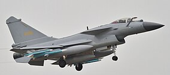
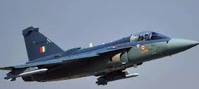

El Chengdu J-10 es un caza polivalente de la Republica Popular China, de caracteristicas todo tiempo y de 4a. generacion.
El avion fue diseñado por el Instituto de Diseño de Aeronaves Chengdu (Instituto 611) y construido por la empresa china Corporacion de Aeronaves Chengdu (CAC) de AVIC.
El J-10 está diseñado principalmente para el combate aire-aire, pero tambien puede realizar misiones de ataque.

El HAL Tejas es un avión de combate polivalente ligero de cuarta generación desarrollado en la India por la empresa Hindustan Aeronautics Limited.
Es una aeronave con diseño de ala en delta, empujada por un solo motor. Originalmente conocido como el Light Combat Aircraft (LCA) –una designación que todavía sigue siendo popular–,
la aeronave fue oficialmente bautizada como "Tejas"4 por el primer ministro Atal Bihari Vajpayee el 4 de mayo de 2003.

El KAI T-50 Golden Eagle es un avión de entrenamiento a reacción avanzado y un caza ligero fabricado y desarrollado desde finales de los años 90 por la compañía surcoreana
Korean Aerospace Industries, en colaboración con la estadounidense Lockheed Martin,4 siendo uno de los primeros aviones supersónicos desarrollados en el país asiático.
Posteriormente, la compañía comenzó a modernizar los cuatro primeros prototipos del modelo, convirtiéndolos en una variante de caza ligero avanzado con la denominación FA-50.